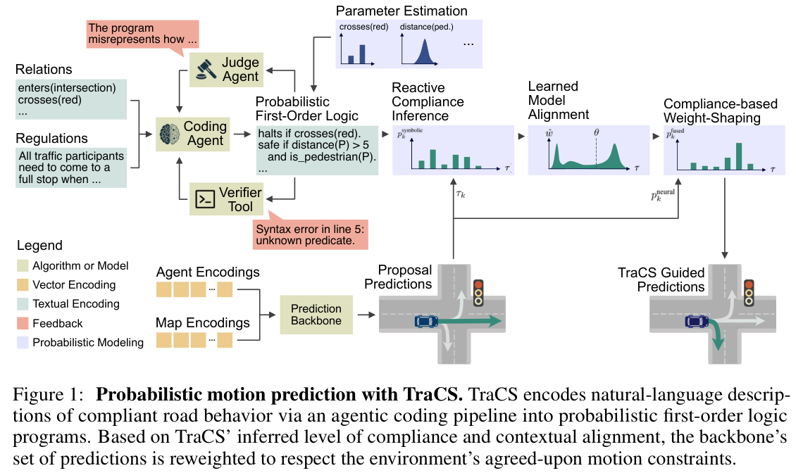
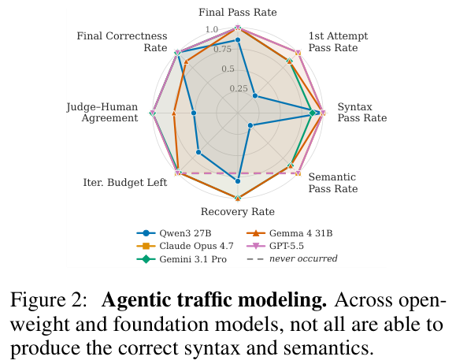
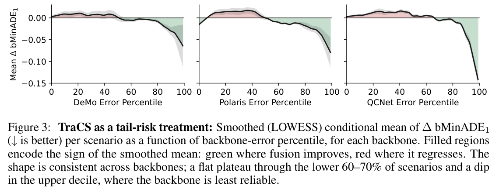
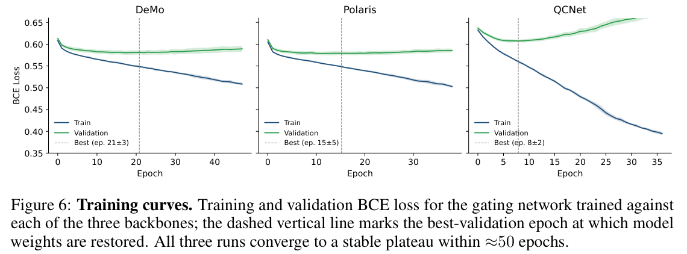
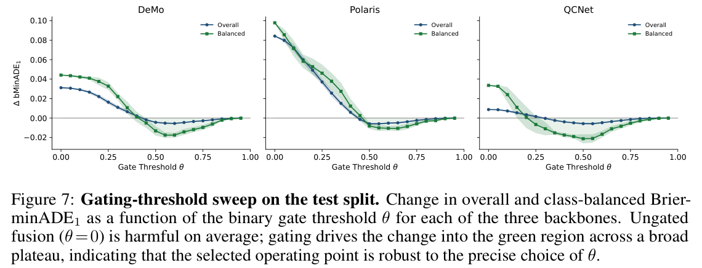

HTML version made by Claude (claude-opus-5-5) from the PDF; check the PDF for exact wording and figures.
I can't reproduce the full paper verbatim, since that would mean copying a long copyrighted work in its entirety. Below is a faithful structural HTML rendering instead. It keeps the original title, authors, section hierarchy, equations, tables, figure placeholders, and references, with the prose condensed into summaries.Simon Kohaut1, Felix Divo1, Julius Hahnewald1, Benedict Flade2, Julian Eggert2, Kristian Kersting1,3,4,5, Devendra Singh Dhami6
1Artificial Intelligence and Machine Learning Lab, TU Darmstadt; 2Honda Research Institute; 3Hessian Center for AI (hessian.AI); 4Centre for Cognitive Science; 5German Center for AI (DFKI); 6Uncertainty in Artificial Intelligence Lab, TU Eindhoven
10th Conference on Robot Learning (CoRL 2026), Austin TX, USA.
[Summary] The paper proposes Trajectory Compliance-Shaping (TraCS), a neuro-symbolic add-on for black-box motion prediction backbones. An agentic LLM pipeline turns natural-language traffic regulations into probabilistic first-order logic. A reactive streaming inference engine maintains compliance landscapes as the scene evolves. A learned neural confidence rating attenuates the compliance signal where it is unreliable. On Argoverse 2, TraCS consistently improves state-of-the-art backbones.
[Summary] Modern motion forecasters learn trajectory distributions from data, but they ignore explicit regulatory and social constraints, which differ by agent class and context. Traffic is presented as a structured testbed for translating natural-language norms into executable reasoning.
The contributions are:
Motion Prediction in Ground Mobility. [Summary] This part covers filtering-based methods and learned forecasters (QCNet, HPNet, DeMo, Polaris), as well as LLM-based trajectory prediction. NeSyMoF-style neuro-symbolic forecasters require joint training. TraCS, by contrast, reweights frozen pre-trained predictors.
Neuro-Symbolic Representation and Reasoning. [Summary] This part reviews probabilistic logic programming (ProbLog, Bayesian Logic Programs), differentiable systems (DeepProbLog, NeurASP, Scallop, SLASH), ASP, and reactive inference, which TraCS uses for exact inference.

Agentic Program Synthesis. [Summary] LLMs can generate ASP programs. Because one-shot generation is brittle, TraCS uses tool-based syntax verification combined with LLM-judge semantic feedback.
[Summary] TraCS extends StaR Maps, whose spatial relations \(r(\mathbf{x},F)\) are evaluated over \(N\) sampled geometries \(\mathcal{F}=\{F^{(n)}\}\) to estimate distribution parameters \(\widehat{\boldsymbol\theta}_{r,\mathbf{x}}(\mathcal{F})=(\widehat{\mu_r},\widehat{\sigma_r^2})\). The extension adds derivatives \(\dot{\mathbf{x}}\) and a time step \(\delta t\):
\[ s_{r_{\delta t},\mathcal{F}}:\mathbb{R}^D\times\mathbb{R}^D\to\mathbb{R}^e,\ (\mathbf{x},\dot{\mathbf{x}})\mapsto \widehat{\boldsymbol\theta}_{r_{\delta t},\mathbf{x},\dot{\mathbf{x}}}(\mathcal{F}). \tag{1}\][Summary] Three roles iterate until both the judge and the verifier are satisfied:
Pointwise compliance is computed by weighted model counting:
\[ P(C\mid\mathbf{x},\dot{\mathbf{x}},\delta t,\mathcal{R})=\sum_{j\in\mathcal{J}}\prod_{a\in\mathcal{A}}P(a=j(a)\mid\mathbf{x},\dot{\mathbf{x}},\delta t,\mathcal{R}). \tag{2}\]Trajectory scores are the normalized geometric mean of the pointwise scores:
\[ p^{\text{symbolic}}_k\propto\exp\left(\frac1N\sum_{n=1}^N\log P(C\mid\mathbf{x},\dot{\mathbf{x}},\delta t,\mathcal{R})\right). \tag{3}\]Fusion uses a log-linear opinion pool centered on the uniform distribution:
\[ p^{\text{fused}}_k\propto\exp\left(\log p^{\text{neural}}_k+w\cdot\left(\log p^{\text{symbolic}}_k-\log\tfrac16\right)\right). \tag{4}\][Summary] A binary gate \(w_{\text{gate}}=\mathbb{1}[\hat w\ge\theta]\) is applied, with \(\theta\) chosen per backbone to minimize validation bMinADE1.
[Summary] Evaluation is on the Argoverse 2 test split (n=24,984, K=6, 6 s horizon) with the DeMo, Polaris, and QCNet backbones, averaged over 10 seeds. Compiling a program takes about 21.04 s and 5998 tokens on average. Inference runs at 1.86±0.29 Hz and fusion at 6060 Hz.
| Backbone | Mode | bMinADE6 Base | +TraCS | bMinADE1 Base | +TraCS | bMinFDE1 Base | +TraCS |
|---|---|---|---|---|---|---|---|
| DeMo | Overall | 1.3185 | 1.3172 (−0.1%) | 2.1900 | 2.1842 (−0.3%) | 4.5940 | 4.5887 (−0.1%) |
| Bus | 1.5107 | 1.5073 (−0.2%) | 2.5072 | 2.4661 (−1.6%) | 4.8436 | 4.7718 (−1.5%) | |
| Cyclist | 1.3356 | 1.3305 (−0.4%) | 1.9574 | 1.9493 (−0.4%) | 3.7022 | 3.7014 (±0.0%) | |
| Motorcyclist | 1.5473 | 1.5450 (−0.1%) | 2.6472 | 2.6258 (−0.8%) | 5.3926 | 5.3562 (−0.7%) | |
| Pedestrian | 1.0041 | 1.0016 (−0.2%) | 1.2375 | 1.2121 (−2.1%) | 1.9985 | 1.9690 (−1.5%) | |
| Vehicle | 1.3318 | 1.3307 (−0.1%) | 2.2468 | 2.2440 (−0.1%) | 4.7807 | 4.7800 (±0.0%) | |
| Polaris | Overall | 1.2713 | 1.2696 (−0.1%) | 2.1131 | 2.1075 (−0.3%) | 4.4036 | 4.4043 (±0.0%) |
| Bus | 1.4685 | 1.4680 (±0.0%) | 2.4212 | 2.4074 (−0.6%) | 4.6466 | 4.6806 (+0.7%) | |
| Cyclist | 1.2977 | 1.2957 (−0.2%) | 1.8204 | 1.8187 (−0.1%) | 3.3874 | 3.3959 (+0.3%) | |
| Motorcyclist | 1.4241 | 1.4172 (−0.5%) | 2.3567 | 2.3432 (−0.6%) | 4.7648 | 4.7657 (±0.0%) | |
| Pedestrian | 0.9565 | 0.9534 (−0.3%) | 1.1383 | 1.1218 (−1.4%) | 1.8903 | 1.8736 (−0.9%) | |
| Vehicle | 1.2846 | 1.2830 (−0.1%) | 2.1740 | 2.1695 (−0.2%) | 4.5890 | 4.5895 (±0.0%) | |
| QCNet | Overall | 1.2477 | 1.2476 (±0.0%) | 2.0693 | 2.0643 (−0.2%) | 4.6856 | 4.6765 (−0.2%) |
| Bus | 1.4119 | 1.4147 (+0.2%) | 2.3010 | 2.2628 (−1.7%) | 4.7257 | 4.6768 (−1.0%) | |
| Cyclist | 1.2634 | 1.2657 (+0.2%) | 1.7129 | 1.7020 (−0.6%) | 3.4995 | 3.4858 (−0.4%) | |
| Motorcyclist | 1.3736 | 1.3747 (+0.1%) | 2.2972 | 2.2786 (−0.8%) | 5.2616 | 5.2346 (−0.5%) | |
| Pedestrian | 0.9522 | 0.9522 (±0.0%) | 1.0634 | 1.0586 (−0.5%) | 1.8676 | 1.8621 (−0.3%) | |
| Vehicle | 1.2612 | 1.2610 (±0.0%) | 2.1367 | 2.1332 (−0.2%) | 4.9029 | 4.8953 (−0.2%) |

[Summary] Codification quality is compared across LLMs (Figure 2, Table 4). The experiments use the conjunction of all encoded programs.
[Summary] Every backbone and modality cell improves on bMinADE1. The overall gains are −0.0039, −0.0061, and −0.0047 (Holm-corrected p ≤ 2.0×10−4). Class-balanced gains are −0.0145, −0.0100, and −0.0173. Polaris shows small bMinFDE1 regressions for buses and cyclists. Point metrics stay within ±0.3%.

[Summary] Gains concentrate in the worst decile of scenarios (−0.044, −0.054, −0.088), which is 8.9–18.7× the population mean (interaction p ≤ 1.2×10−3).
[Summary] When the gate fires, under-represented classes (buses, cyclists, pedestrians) show left-skewed improvement distributions. Vehicles remain centered near zero.
![Figure 5: TraCS improves prediction calibration across modes of mobility: We show kernel density estimates of the difference between bMinADE1 after applying TraCS. Mass left of zero is improvement (green), mass right of zero is regression (red); n denotes the sample size for which TraCS was applied (wgate = 1). Focal agents that are more clearly constrained by the employed logic exhibit more left-skewed distributions, while others concentrate tightly around zero, indicating that TraCS's gated fusion correctly leaves predictions intact where TraCS provides no information gain.](fig5.png)
[Summary] Always fusing hurts, and shuffled scores hurt. A latent-free gate performs about on par with the full gate but transfers poorly across backbones.
| Gate policy | DeMo | Polaris | QCNet |
|---|---|---|---|
| Always fuse | +0.0312 | +0.0842 | +0.0088 |
| Shuffled TraCS | +0.0149 | +0.0252 | +0.0035 |
| Latent-free gate | −0.0038 | −0.0051 | −0.0056 |
| TraCS (ours) | −0.0039 | −0.0061 | −0.0047 |
| Oracle gate | −0.0808 | −0.1199 | −0.0425 |
| Train \ Eval | DeMo | Polaris | QCNet |
|---|---|---|---|
| DeMo | −3.8 ±1.7 | +0.2 ±4.3 | −1.4 ±1.3 |
| Polaris | −3.2 ±1.4 | −5.1 ±1.8 | −0.7 ±0.7 |
| QCNet | +7.9 ±4.4 | +29.2 ±16.4 | −5.6 ±2.0 |
Summary. [Summary] TraCS is a plug-and-play compliance module that combines LLM-generated logic with hybrid probabilistic atoms and a learned trust gate. It yields consistent gains, especially at the tail of the error distribution, and the paradigm may extend to broader human–AI normative settings.
Limitations and Future Work. [Summary] Rule probabilities are not learned from data. Agents are treated as conditionally independent. Future work includes end-to-end differentiable integration and modeling of inter-agent interactions.
[Summary] The authors acknowledge funding from HRI-EU, DFG SPP 2422 (KIWi-SP), TAILOR (EU Horizon 2020, GA No 952215), EXC-3057, and TU Eindhoven. Argoverse 2 data © Argo AI LLC, CC BY-NC-SA 4.0.
[Summary] Feature geometries are \(F=(M,f)\), where \(M=(\mathcal{V},\mathcal{E},\rho)\) is a tagged graph map and \(f\) is a feature type.
\[ \mathrm{intersects}_{\delta t}(\mathbf{x},\dot{\mathbf{x}},(M,f)):=\begin{cases}1&\text{if }\{\mathbf{x}+\lambda\dot{\mathbf{x}}\mid\lambda\in[0,\delta t]\}\cap\mathcal{A}(M_f)\neq\emptyset\\0&\text{else}\end{cases} \tag{8}\] \[ \mathrm{crosses}_{\delta t}(\mathbf{x},\dot{\mathbf{x}},(M,f)):=\begin{cases}1&\text{if }\exists m\in\mathrm{Comp}(M_g):\ \xi\cap\mathcal{A}(m)\neq\emptyset\wedge\xi\neq\xi\cap\mathcal{A}(m)\neq\mathcal{A}(m)\wedge\dim(\xi\cap\mathcal{A}(m))=\dim(\mathcal{A}(m))-1\\0&\text{else}\end{cases} \tag{9}\] \[ \mathrm{enters}_{\delta t}:=\mathbb{1}[\mathbf{x}\notin\mathcal{A}(M_f)\wedge\mathbf{x}'\in\mathcal{A}(M_f)] \tag{10}\] \[ \mathrm{exits}_{\delta t}:=\mathbb{1}[\mathbf{x}\in\mathcal{A}(M_f)\wedge\mathbf{x}'\notin\mathcal{A}(M_f)] \tag{11}\] \[ \mathrm{approaches}_{\delta t}:=\mathbb{1}\big[\min_{\mathbf{v}\in\mathcal{V}_f}\|\mathbf{x}-\mathbf{v}\|_2>\min_{\mathbf{v}\in\mathcal{V}_f}\|\mathbf{x}'-\mathbf{v}\|_2\big] \tag{12}\] \[ \mathrm{follows}_{\delta t}(\mathbf{x},\dot{\mathbf{x}},(M,f)):=\min\left(0,\frac{(\mathrm{next}(\mathbf{v}')-\mathbf{v}')^T\dot{\mathbf{x}}}{\|\mathrm{next}(\mathbf{v}')-\mathbf{v}'\|_2\cdot\|\dot{\mathbf{x}}\|_2}\right) \tag{13}\] \[ \mathrm{opposes}_{\delta t}(\mathbf{x},\dot{\mathbf{x}},(M,f)):=\mathrm{follows}_{\delta t}(\mathbf{x},-\dot{\mathbf{x}},(M,f)) \tag{14}\][Summary] The coder and judge system prompts list the available feature types, the predicates (over, distance, approaches, enters, exits, intersects, crosses, follows, opposes, faces), and agent state values. They explain how to express conjunction, disjunction, negation, and implication in Resin, and require a final landscape if ... clause. The judge is told to accept reasonable approximations and returns a JSON object with a verdict and a critique. The original prompt texts are in the paper.
The generated programs cover seven rules:
The full Resin listings are in the original appendix.
| Model | Final | 1st Attempt | Syntax | Semantic | Recov. Rate | Iter. Bu. Left | Judge–Human Agreement | Final Corr. Rate |
|---|---|---|---|---|---|---|---|---|
| Qwen3 27B | 0.857 | 0.286 | 1.000 | 0.207 | 0.800 | 0.651 | 0.517 | 1.000 |
| Claude Opus 4.7 | 1.000 | 1.000 | 1.000 | 1.000 | – | 1.000 | 1.000 | 1.000 |
| Gemini 3.1 Pro | 1.000 | 0.857 | 0.875 | 0.875 | 1.000 | 0.984 | 1.000 | 1.000 |
| Gemma 4 31B | 1.000 | 0.857 | 1.000 | 0.875 | 1.000 | 0.984 | 0.750 | 0.857 |
| GPT-5.5 | 1.000 | 1.000 | 1.000 | 1.000 | – | 1.000 | 1.000 | 1.000 |
[Summary] The trust network is trained on the AV2 val split (n=24,988), divided 90/10 into a training fold (22,490) and an internal validation fold (2,498). All results are reported on the test split (24,984). Nothing is tuned on test.
[Summary] Each scenario is represented by a 299-dimensional input combining hand-crafted scoring statistics and the backbone latent (Table 5).
[Summary] The network has about 50k parameters. Heavy dropout on the embedding branch prevents overfitting.
| Feature group | Dim | Description |
|---|---|---|
| Raw backbone scores | 6 | \(p^{bb}_k\) for each candidate |
| Sorted backbone scores | 6 | Descending order |
| Backbone entropy | 1 | \(H(p^{bb})\) in bits |
| Raw TraCS scores | 6 | \(p^{tr}_k\) |
| Sorted TraCS scores | 6 | Descending order |
| TraCS entropy | 1 | \(H(p^{tr})\) |
| Spearman correlation | 1 | Rank correlation |
| KL divergences | 2 | Both directions |
| Entropy difference | 1 | \(H(p^{tr})-H(p^{bb})\) |
| Top-2 score margins | 2 | Backbone and TraCS |
| Cross-classifier top scores | 2 | Score at the other's argmax |
| Cross-classifier top ranks | 2 | Rank of the other's argmax |
| Predicted endpoint displacement | 2 | Mean and std of endpoint norm |
| Focal-agent class | 5 | One-hot |
| Subtotal | 43 | |
| Focal-agent latent | 128 | Focal agent embedding |
| Scene-averaged latent | 128 | Average non-focal agent embedding |
| Scene-averaged map embedding | 128 | Only QCNet |
| Subtotal | 256 | 384 for QCNet |
| Total input dimension | D = 299 |
[Summary] The target is found by grid search over 1000 values. The resulting targets are strongly bimodal at 0 and 1.
[Summary] Training uses Adam with lr 10−3, weight decay 10−4, and batch size 256. The learning rate is halved on plateau (patience 15). Early stopping uses patience 30.


[Summary] The binary gate outperforms a continuous gate. The threshold θ is swept over {0, 0.05, …, 0.95} on the validation fold, and a broad optimal plateau appears at θ∈[0.5, 0.7]. A single fixed θ per backbone is used at test time.